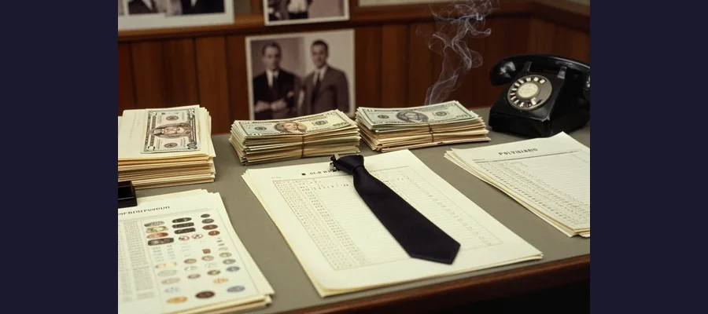

D.B. Cooper: The Only Unsolved Skyjacking in American History

In 1971, a man hijacked a commercial flight, collected $200,000 in ransom, and parachuted into the night sky — never to be seen again. New FBI files released in 2025 have reignited the hunt.
On the afternoon of November 24, 1971 — the day before Thanksgiving — a man in a dark suit and sunglasses boarded Northwest Orient Airlines Flight 305 from Portland to Seattle. He gave his name as Dan Cooper (later misreported as "D.B. Cooper" by the press). He ordered a bourbon and soda, then passed a note to the flight attendant.
The note said he had a bomb in his briefcase. He opened it to show what appeared to be eight red cylinders connected by wires. His demands were specific: $200,000 in $20 bills, four parachutes, and a fuel truck standing by in Seattle.
In Seattle, the passengers were released unharmed. Cooper received his money and parachutes. The plane took off again, heading south at Cooper's request — flying low at 10,000 feet with the landing gear down and the aft stairs deployed. Somewhere over southwest Washington state, D.B. Cooper jumped into the freezing November night and disappeared forever.
Evidence
The evidence in the D.B. Cooper case includes physical artifacts, eyewitness accounts, and newly released FBI files.
- 💰 Ransom money found: In 1980, an 8-year-old boy named Brian Ingram found $5,880 of Cooper's ransom money buried in the sand along the Columbia River. The serial numbers matched the FBI's list.
- 👔 Black tie clip: Cooper left behind a black J.C. Penney clip-on tie with a mother-of-pearl tie tack, which yielded partial DNA profiles.
Cooper jumped from the aft stairs of a Boeing 727 into freezing November rain over Washington state
📁 2025 FBI File Release
In 2025, the FBI released 472 new pages of case files revealing previously unknown suspects, including a former pilot from Maine and a man in a wheelchair. The files also document hundreds of false confessions and hoaxes from people claiming to be Cooper.
Key details from the new files include:
- Agents investigated a former military paratrooper who matched Cooper's physical description and had knowledge of the Boeing 727's aft stair system.
- Multiple informants claimed Cooper had confided in them before the hijacking — but none could be verified.
- The FBI received over 1,000 tips from the public naming possible suspects.
Competing Explanations
Theories about D.B. Cooper's identity and fate have multiplied over five decades.
He survived: The most popular theory. Cooper specified the plane fly at 10,000 feet (low enough to survive a jump) and at minimum speed. He requested four parachutes (suggesting he knew what he was doing). The area he jumped over was rugged but survivable.

The FBI investigated over 1,000 suspects during the 45-year investigation before closing the case in 2016
He died in the jump: The weather was terrible — freezing rain, strong winds, near-zero visibility. Cooper jumped in a business suit with no survival gear. The FBI's original theory was that he died on impact or shortly after.
He was Richard McCoy: Richard McCoy Jr. pulled off an almost identical hijacking in April 1972, also using a bomb threat and parachuting from a Boeing 727. He was caught and killed in a shootout with FBI agents in 1974. Some investigators believe McCoy was Cooper, though timeline issues make this unlikely.
✈️ Why the Boeing 727?
The Boeing 727 was the perfect hijacking aircraft — its aft stairs could be deployed in flight, it could fly slowly at low altitude, and the stairwell was not visible from the cockpit. After Cooper's jump, the FAA required "Cooper vanes" to prevent stairs from being deployed mid-flight.
Open Questions
The D.B. Cooper case was officially closed by the FBI in 2016 after 45 years of investigation, but questions remain.
Who was he? Over 1,000 suspects were investigated. The most compelling include Richard McCoy, Robert Rackstraw (a former CIA pilot), and Kenneth Christiansen (a former airline employee). None were definitively confirmed.
Where's the rest of the money? Only $5,880 of the $200,000 has ever been found. If Cooper survived, he presumably spent or hid the remaining $194,120. If he died, the money may still be scattered in the wilderness — or buried under decades of forest growth.
The only unsolved commercial skyjacking in U.S. history remains as tantalizing a mystery today as it was in 1971!
📖 Recommended Reading
Want to learn more? Check out Skyjack: The Hunt for D. B. Cooper by Geoffrey Gray on Amazon for a deeper dive into this fascinating topic. (As an Amazon Associate, we earn from qualifying purchases.)
References & Further Reading
- Popular Mechanics: New FBI Files on D.B. Cooper
- ABC News: New FBI files reveal suspects in DB Cooper case
- History.com: D.B. Cooper
Editorial note: reconstructions are continuously revised as imaging and inscription studies improve. See our Editorial Policy.